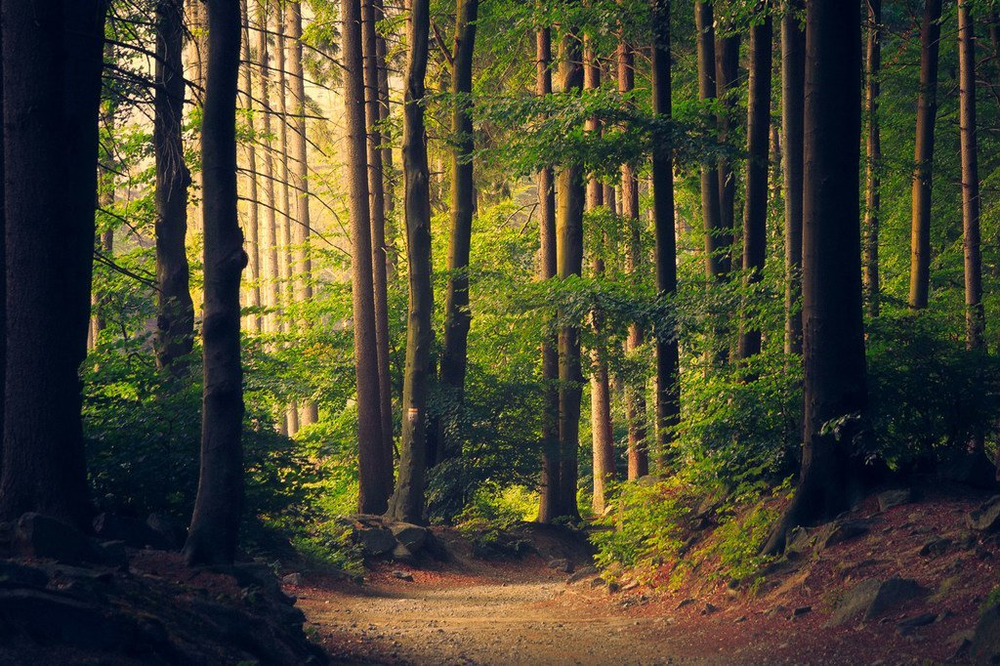

Music from: Deep Sleep Music and Nature Sounds - Zen Garden HD Relaxing. (2016, June 1). YouTube. https://www.youtube.com/watch?v=QKSFDPEGUZo
Image from: 联合国. (2021, March 24). 森林恢复为大流行后的复苏和更绿色的未来提供了路径. 联合国新闻. https://news.un.org/zh/story/2021/03/1080652
1 Imagine you are entering a forest, if you can bring an animal with you, what would it be? Describe it as detailed as possible.
2 When you enter the forest, do you think it's the day or the night?
3 When you enter the forest, what is the first animal you see? Describe it as detailed as possible.
4 When you proceed on your journey, you saw a key on the floor, will you pick it up?
5 Suddenly, you saw a huge bear walking slowly towards you, what would you do?
6 Moving on, you saw a house in front of you, do you think it's a small hut or a mansion?
7 You walk towards the house, is it open or close?
8 Entering the house, you saw a glass of water on the table, how filled is the glass?
9 There is a vase on the table, how many flowers are there in the vase?
10 Other than the table, there are chairs, how many chairs are there?
11 The house have a few rooms, how many do you think there is?
12 There is an elderly in the house, what kind of person do you think the elderly is?
13 Walking out of the house, there is a girl selling rose, you are planning to buy 100 of them for your love, what is the ratio of red and white rose will you get?
14 You saw a lake next to the house, is it grassland or forest surrounding it?
15 Next to the lake there is a fisherman, he wants to give you a fish, will you accept it?
16 You are leaving the forest, will you come back again with the animal that you choose?
Image from: The Big Reveal | Book People. (2018, August 17). Book People Richmond. https://www.bookpeoplerichmond.com/event/big-reveal
1 The animal you bring into the forest represents the qualities you want in your ideal partner.
2 Day or night represents what you see in your prospects. Day says that you feel hopeful,night says that you feel worried.
3 The animal you meet represents how you see yourself
4 If you pick up the key says that you have curiosity towards things.
5 The reactions you have/actions you took when you meet the big bear, is how you will react/act when you meet challenges.
6 The size of the house you see represents your desire towards fame and material stuff.
7 The door represents your heart when face people.
8 The volume in your glass represents your sex desire.
9 The number of flower represents the number of relationships you want to have.
10 The number of chairs represent the number of family members you wish to have when you start a family.
11 The number of rooms represent the number of kids you wish to have.
12 The elderly is how you wish you look like when you grow old.
13 Red roses represent the love recieve, white roses represent the love you give. Red and white roses ratio represents the ratio of love you give and recieve in a relationship.
14 If the lake is surrounded by trees, says that you have a strong defensiveness when working with people, if it is surrounded by grassland says that you are rather approachable.
15 If you will accept the fish that the fisherman give, says that you might cheat in a relationship.
16 If you will come back with the same animal, it says that you might go back in a relationship with your ex.
Watch others try here!
八婆 BESTIES. (2020, September 4). 【心理測驗】完全揭露你的潛意識？！伴侶特質？未來方向？如何面對困難？一生一定要測一次的超準森林情境式測驗！│八婆BESTIES. YouTube. https://www.youtube.com/watch?v=rlhqJq54haw
AmazingPhil. (2017, September 14). TAKE A PSYCHOLOGY TEST WITH ME! YouTube. https://www.youtube.com/watch?v=ChH22SrhjPY
Just for fun!